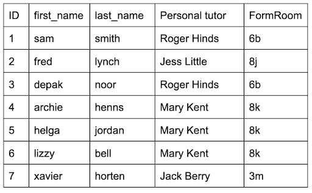
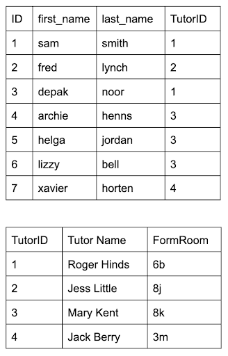
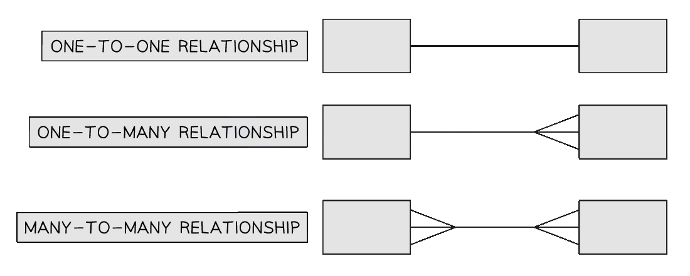

Database Models
Limitations of file-based systems
What is a file-based system?
- A file-based system refers to any system where data is stored in separate files (e.g. text files, spreadsheets)
- Each application or department may have its own files, often with redundant or duplicated data
- There is no central control or shared structure, files are often standalone
- Common in older systems or small-scale setups
Limitations
| Limitation | Explanation |
|---|---|
| Data redundancy | The same data is stored in multiple files, leading to duplication |
| Data inconsistency | If one file is updated but others aren’t, the data becomes unreliable |
| Lack of data integrity | It’s harder to ensure data is accurate and consistent across all files |
| Poor security | Limited control over who can access or modify different files |
| Difficult to update | Changes must be made in several places, increasing time and risk of error |
| Limited scalability | Not suitable for large volumes of data or complex data relationships |
| No central control | Each application manages its own data, leading to lack of coordination |
| Hard to manage relationships | Cannot easily link related data across files (e.g. customers and their orders) |
Flat file vs Relational
- A flat file database is one that stores all data in a single table
- It is simple and easy to understand but causes data redundancy, inefficient storage and is harder to maintain
- A relational database is one that organises data into multiple tables
- It uses keys to connect related data which reduces data redundancy, makes efficient use of storage and is easier to maintain
-
Consider this example flat file table of students

-
This table has redundant data - the tutor and form room information repeats
- This is inefficient
- If a tutor changed their name we would need to find all instances of that name and change them all
- Missing any would mean the table had inconsistent data
-
A relational database would solve this issue:
- A new table could be created to store the tutor information and the tutor information in the student table could be moved to the new table
- A foreign key in the student table (
TutorID) could link a student to their tutor
-
Now the name of each tutor and their form room is stored only once
- This means if they change only one piece of data, the data is updated in the entire database and inconsistency is avoided
Database terminology
| Term | Definition |
|---|---|
| Entity | A real-world object or concept that data is stored about (e.g. Student, Book) |
| Table | A collection of data about an entity, organised in rows and columns |
| Record (Tuple) | A single row in a table representing one instance of an entity |
| Field (Attribute) | A single column in a table, storing one piece of data about the entity |
| Primary key | A unique identifier for each record in a table (e.g. StudentID) |
| Candidate key | A field (or combination of fields) that could be used as a primary key |
| Secondary key | A field used for searching or sorting, but not necessarily unique |
| Foreign key | A field that links to the primary key in another table to create relationships |
| Relationship | A logical connection between two tables/entities |
| One-to-One | One record in a table relates to one record in another table |
| One-to-Many | One record in a table relates to many records in another table |
| Many-to-Many | Records in one table relate to many records in another, and vice versa |
| Referential integrity | Ensures foreign keys match a primary key in the related table to prevent broken links |
| Indexing | A technique to speed up searching in a table by creating an ordered list of key fields |
Database Design
Entity-relationship (E-R) diagrams
What is an entity?
- An entity in something worthy of capturing and storing data about e.g. students, orders, products, courses, customers
- Entities become tables in a relational database
- Relational databases store different entities in separate tables
- Linking tables depends on the relationships between entities
- There are 3 types of (sometimes called degrees of) relationships:
- One-to-one
- One-to-many
- Many-to-many
- Imagine a company has
- A table of
products - A table of
customers - A table of the
ordersthe customers have made
- A table of
- What is the relationship between a customer and an order?
- One customer can make multiple (many) orders
- But each order relates to a specific (one) customer
- So the relationship between customer and order is one-to-many
- Now consider the relationship between a product and an order
- An order could have more than one (many) products on it
- A product could be on more than one (many) order
- So the relationship between order and product is many-to-many
- One-to-one relationships also exist but are not very common in databases
What is an entity-relationship (E-R) diagram?
- An entity relationship diagram(E-R) is a diagram that represents the entities (tables) that will be in a database and the relationships between these entities
- The entities are drawn as boxes with the entity name in
- The relationships are drawn in as what is known as ‘ crow’s feet notation ’
-
This is how to draw the relationships in the exam:

-
The names of the entities would go inside the boxes These diagrams are simple but tell us some important things about the database:
-
The names of all the tables
- Which tables will have a foreign key - when an entity has a ‘many’ relationship against it that means it will have a foreign key in it that links to the primary key of the connected entity
Database Normalisation
Normalised design
What is a normalised design?
- A normalised design is a database structure that:
- Organises data efficiently
- Eliminates unnecessary duplication
- Ensures data integrity
- Supports easy updates and accurate relationships
- You may be asked to produce a normalised design based on:
- A written description of a system
- A table of unnormalised data
- A set of existing flat tables
- You need to be able to:
- Identify repeating groups or duplicated data
- Break down data into separate related tables
- Assign appropriate primary keys and foreign keys
- Show the database in 1NF, 2NF, and 3NF
- Clearly show relationships between the tables
Step-by-step process
| Step | What to do | Why it matters |
|---|---|---|
| 1 | Read the scenario or table carefully | Understand what entities (real-world things) are involved |
| 2 | Identify the fields and any repeated/duplicated values | These usually indicate the need for more than one table |
| 3 | Apply 1NF – remove repeating groups, separate fields | Each field should hold a single value |
| 4 | Apply 2NF – remove partial dependencies | Make sure non-key fields depend on the whole primary key |
| 5 | Apply 3NF – remove transitive dependencies | Non-key fields should not depend on other non-key fields |
| 6 | Assign primary keys for each table | Every table needs a unique identifier |
| 7 | Use foreign keys to link related tables | Ensures relationships and referential integrity |
Example
- A student is enrolled on multiple courses
- Each course is taught by a teacher
- The table includes:
StudentName, StudentID, CourseID, CourseName, TeacherName - You would:
- Identify Entities: Student, Course, Teacher
- Create tables:
- Student (
StudentID,StudentName) - Course (
CourseID,CourseName,TeacherID) - Teacher (
TeacherID,TeacherName) - A link table: StudentCourse (
StudentID,CourseID) – handles many-to-many
- Student (
Examiner Tips and Tricks
- Always check for repeating fields or duplicated values
- Watch for composite keys in link tables (especially many-to-many relationships)
- Check that all fields in a table depend only on the key, the whole key, and nothing but the key
- Label each stage of your work (1NF → 2NF → 3NF)
First Normal Form (1NF)
What is first normal form?
- For a table to be in first normal form it must:
- Contain atomic values
- Each column in a table must contain single, indivisible values
- Have no repeating groups
- Columns must not contain arrays or lists of values
- Have unique column names
- Each column must have a unique name within the table
- Have a unique identifier (primary key)
- Each row must have a unique identifier to distinguish it from other rows
- Contain atomic values
- This customers table below has no primary key and the name is stored in one field so is not atomic
- This table is not in first normal form Table: Customers
| name | phone | country |
|---|---|---|
| John Smith | 07373 929122 | UK |
| Iram Iravani | 07234 543422 | Iraq |
| Wu Zhang | 04563 523427 | China |
| Anne James | 09378 482894 | USA |
| Khalid Shirvani | 02343 536522 | France |
- This customers table below has a primary key and the name is stored in two fields so it is atomic
- This table is in first normal form Table: Customers
| customer_id | forename | surname | phone | country |
|---|---|---|---|---|
| 1 | John | Smith | 07373 929122 | UK |
| 2 | Iram | Iravani | 07234 543422 | Iraq |
| 3 | Wu | Zhang | 04563 523427 | China |
| 4 | Anne | James | 09378 482894 | USA |
| 5 | Khalid | Shirvani | 02343 536522 | France |
Second Normal Form (2NF)
What is second normal form?
- For a table to be in second normal form it must:
- Fulfil all 1NF requirements
- Only apply to tables with a compound primary key
- Have full functional dependency
- All non-prime attributes (attributes not part of the primary key) must be fully dependent on the primary key
- Have no partial dependencies
- Non-prime attributes must not depend on only part of the primary key (in case of a composite primary key)
- Separate tables should be created for partially dependent attributes
- In this table below,
Course Titleonly depends on part of the compound primary key (the course code) and not the Date so this table is not in second normal form Table: Course
| Course | Date | Course Title | Room | Capacity | Available |
|---|---|---|---|---|---|
| SQL101 | 03/01/2020 | SQL Basics | 4A | 12 | 4 |
| DB202 | 03/01/2020 | Database Design | 7B | 14 | 7 |
| SQL101 | 04/05/2020 | SQL Basics | 7B | 14 | 10 |
| SQL101 | 15/05/2020 | SQL Basics | 12A | 8 | 8 |
| CS50 | 31/05/2020 | C Programming | 4A | 12 | 11 |
- To turn this table into second normal form we will ensure:
Course Titleis moved into its own Course table- A
Sessiontable is created to use the full key (Course,Date) for all time-specific info - No partial dependencies remain Table: Course
| Course | Course Title |
|---|---|
| SQL101 | SQL Basics |
| DB202 | Database Design |
| CS50 | C Programming |
Table: Session
| Course | Date | Room | Capacity | Available |
|---|---|---|---|---|
| SQL101 | 03/01/2020 | 4A | 12 | 4 |
| DB202 | 03/01/2020 | 7B | 14 | 7 |
| SQL101 | 04/05/2020 | 7B | 14 | 10 |
| SQL101 | 15/05/2020 | 12A | 8 | 8 |
| CS50 | 31/05/2020 | 4A | 12 | 11 |
Third Normal Form (3NF)
What is third normal form?
- For a table to be in third normal form it must:
- Fulfill all 2NF requirements
- Have no transitive dependencies
- Non-prime attributes must not depend on other non-prime attributes
- Have each non-prime attribute dependent solely on the primary key, not on other non-prime attributes
- Have separate tables for attributes with transitive dependencies, and the tables should be linked using a foreign key
- In this table below, the certificate depends on the title - this a transitive dependency and so this table is not in third normal form
| FilmID | Title | Certificate | Description |
|---|---|---|---|
| 12034 | Saw IV | 18 | Eighteen and over |
| 12035 | Spiderman 2 | 12A | Age 12 and over |
| 12036 | Shrek | U | Universal |
- To turn this table into third normal form we will ensure:
- Transitive dependency removed by separating
Descriptioninto its own table - The
Filmtable only stores fields that directly depend on the key (FilmID) - A foreign key (
Certificate) is used to maintain the relationship Table: Film
- Transitive dependency removed by separating
| FilmID | Title | Certificate |
|---|---|---|
| 12034 | Saw IV | 18 |
| 12035 | Spiderman 2 | 12A |
| 12036 | Shrek | U |
Table: Certificate
| Certificate | Description |
|---|---|
| 18 | Eighteen and over |
| 12A | Age 12 and over |
| U | Universal |
Match each normal form to its definition:
| First Normal Form (1NF) | All fields are fully dependent on the primary key. |
|---|---|
| Second Normal Form (2NF) | There are no repeating groups of attributes. |
| Third Normal Form (3NF) | There are no partial dependencies. |
[1] Answer
| First Normal Form (1NF) | There are no repeating groups of attributes. |
|---|---|
| Second Normal Form (2NF) | There are no partial dependencies. |
| Third Normal Form (3NF) | All fields are fully dependent on the primary key. |